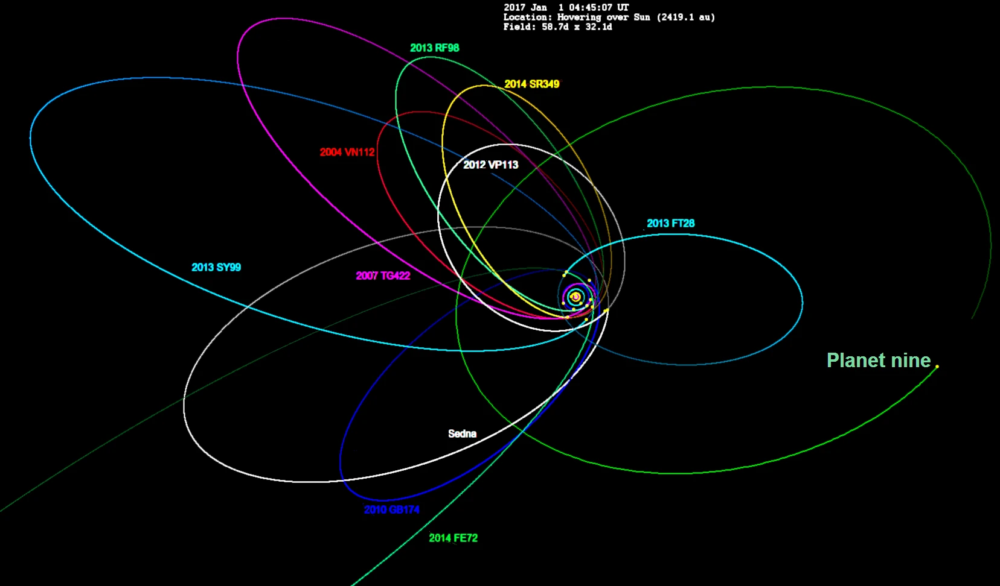
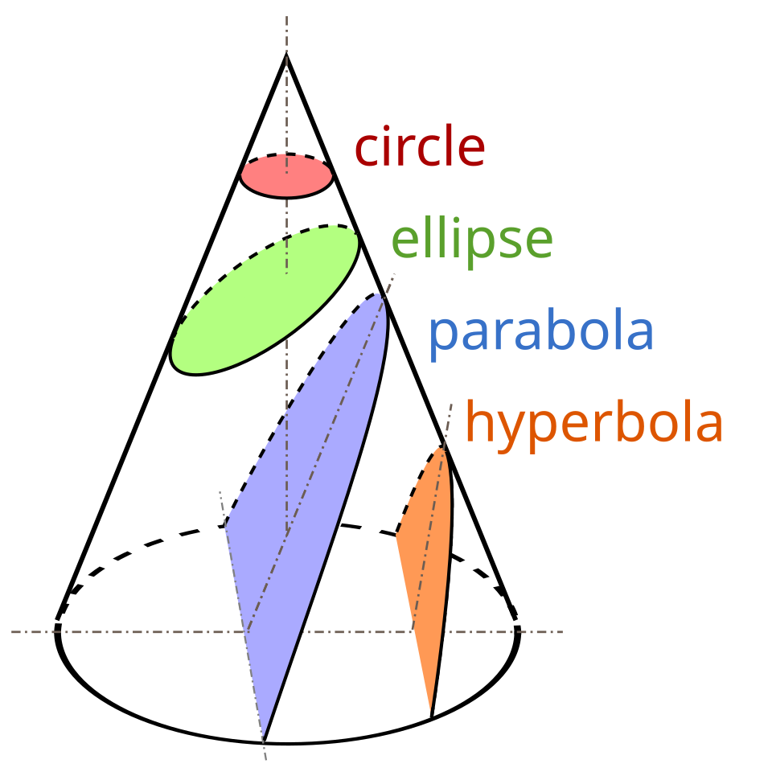

Introduction
The motion of planets and satellites under gravity leads to famous shapes: ellipses, parabolas, and hyperbolas. Explaining why these paths are conic sections is a classic result of Newtonian mechanics. Historically, Kepler observed that planets move in ellipses (one of the foci containing the Sun); Newton’s inverse-square law of gravitation then explains this rigorously. In this report we outline the full derivation: starting from the central $1/r^2$ force, using conservation laws, and solving the orbit differential equation to see why the solutions are conic sections (circles are just special ellipses). This is important because it connects Newton’s universal gravity $F=Gm_1m_2/r^2$ to the geometry of orbits seen in astronomy.
I'll avoid high-level Lagrangian mechanics and keep the explanation clear and step-by-step so ya'll can understand better.
The Nature of Gravitational Force
Newton’s law of universal gravitation says any two point masses $m_1,m_2$ attract each other with force $$F = G\frac{m_1 m_2}{r^2}\,,$$ directed along the line between them. This is a central force: it acts along the radius vector $\mathbf r$ (connecting the bodies) and depends only on the distance $r$. An important consequence is that the resulting motion is planar: the force always points toward (or away from) the center, so there is no force perpendicular to the plane of motion. Moreover, gravity obeys an inverse-square law (proportional to $1/r^2$). Many significant forces (gravity and electrostatics) share this form. The exact $1/r^2$ dependence is crucial: it leads to orbits that are conic sections. (By contrast, other power laws give very different trajectories.)
Conservation of Angular Momentum
Because gravity is central, there is no torque on the orbiting body (torque $\boldsymbol\tau = \mathbf r \times \mathbf F = 0$). Thus angular momentum $\mathbf L = \mathbf r\times m\mathbf v$ is conserved. Its magnitude $L = m r^2\dot\varphi$ stays constant, which means $r^2\dot\varphi = h$ for some constant $h$ (per-unit-mass angular momentum). Geometrically, this implies Kepler’s second law (equal areas in equal times) and confines motion to a fixed plane. The conservation law simplifies our problem: in polar coordinates $(r,\varphi)$, only one coordinate (the radius) needs to be solved explicitly, since $\dot\varphi = h/r^2$ is known. In formula form, conservation of angular momentum gives$$r^2\dot\varphi = h \quad\Longrightarrow\quad \dot\varphi = \frac{h}{r^2}\,,$$and this single equation encapsulates the tangential motion.
The Orbit Equation from Newton’s Law
We now write Newton’s second law for a small mass $m$ orbiting a much larger mass $M$. Using reduced mass $\mu\approx m$ (since $M\gg m$) and setting $\mu G M = \mu$, the equation of motion is $$\ddot{\mathbf r} = -\frac{\mu}{r^3}\,\mathbf r,$$ pointing radially inward. In polar coordinates, the acceleration has radial and transverse components: $\ddot r - r\dot\varphi^2$ in the radial direction and $(r\ddot\varphi + 2\dot r\,\dot\varphi)$ in the transverse. Since the transverse component must vanish (no tangential force), one finds $r^2\dot\varphi = h$ constant as above. The radial equation becomes $$\ddot r - r\dot\varphi^2 = -\frac{\mu}{r^2}.$$ Substituting $\dot\varphi^2 = h^2/r^4$, this simplifies to $$\ddot r = \frac{h^2}{r^3} - \frac{\mu}{r^2}.$$ This is a second-order differential equation for $r(t)$. We can also combine it with the angular equation $r^2\dot\varphi=h$. A more useful form comes by changing independent variable to $\varphi$ (see next section). The key point is that from Newton’s law and $r^2\dot\varphi=h$ one arrives at the so-called orbit equation in reciprocal form. Solving it (see below) yields $$r(\varphi)=\frac{h^2/\mu}{1+e\cos(\varphi-\varphi_0)},$$ which indeed is the general polar form of a conic section. (Here $e$ is a constant of integration called the eccentricity, and $\varphi_0$ sets the periapsis direction.) In particular $e=0$ gives a circle.

The Genius Substitution
The orbit equation in terms of $r(t)$ is tricky, but a classic trick is to let $$u(\varphi)=\frac{1}{r(\varphi)}$$ instead of solving for $r(t)$. Using $u=1/r$ and $r^2\dot\varphi=h$, one converts derivatives with respect to time into derivatives with respect to angle. Without going through every algebraic step here, this substitution transforms the radial equation into the Binet form: $$\frac{d^2u}{d\varphi^2} + u = \frac{\mu}{h^2}\,,$$ a linear second-order ODE. (One key step is using $\dot r = -\frac{h}{r^2}\,\frac{du}{d\varphi}$ and differentiating again.) The genius of $u=1/r$ is that for an inverse-square force, the right-hand side $\mu/h^2$ is a constant. In other words, the ODE becomes $$\frac{d^2u}{d\varphi^2} + u = \text{constant},$$ whose solutions are simple sine and cosine functions plus a constant offset. This simplification hinges on the $1/r^2$ nature of gravity: for other force laws, the right-hand side would depend on $u$ in a more complicated way.
Solving the Orbit Equation (and What We Get)
The equation $$\frac{d^2u}{d\varphi^2} + u = \frac{\mu}{h^2}$$ has the general solution $$u(\varphi)=\frac{\mu}{h^2}\Big[1 + e\cos(\varphi-\varphi_0)\Big],$$ where $e$ and $\varphi_0$ are integration constants. Converting back to $r=1/u$, we obtain $$r(\varphi)=\frac{h^2/\mu}{1 + e\cos(\varphi-\varphi_0)}.$$ By shifting the zero of angle, one can set $\varphi_0=0$ without loss of generality (choosing periapsis as the reference). Thus a concise result is: $$r(\varphi)=\frac{h^2/\mu}{1 + e\cos\varphi}.$$ This derivation matches known textbook results. Here $h^2/\mu$ is called the semi-latus rectum $p$, and $e$ the eccentricity. All possible orbits under Newtonian gravity fall into this family
Why This Is a Conic Section
The equation $$r = \frac{p}{1 + e\cos\varphi}$$ is the standard polar form of a conic section with eccentricity $e$ and focus at the pole. Geometrically, a conic can be defined as the locus of points whose distance from a focus and a directrix line have fixed ratio $e$. In polar coordinates with the focus at the origin, that ratio condition directly leads to the above equation. Thus our orbit equation matches the definition of a conic.. Put differently, the combination of conservation laws and Newton’s inverse-square force has enforced exactly the shape-property that Kepler observed. Note also that if $e<1$, the denominator $1+e\cos\varphi$ never goes to zero, giving a closed ellipse; if $e=1$ the denominator can reach zero at one angle, producing a parabola; if $e>1$ there are two angles where $1+e\cos\varphi=0$, leading to a hyperbola (unbounded orbit). In each case the central body sits at a focus of the conic.
Energy can tell us about the shape too!
Another way to understand orbit shapes is via energy conservation. The total specific energy $E$ (per unit mass) of the orbiting body is $$E = \frac{1}{2}\dot r^2 + \frac{1}{2}r^2\dot\varphi^2 - \frac{\mu}{r}.$$ Using $r^2\dot\varphi=h$, one can show that $e^2 = 1 + (2Eh^2/\mu^2)$. Thus the eccentricity is determined by energy (and angular momentum). If $E<0$, then $e<1$ and the orbit is an ellipse (bound, closed orbit). If $E=0$, then $e=1$ and the orbit is exactly parabolic (the marginal escape orbit). If $E>0$, then $e>1$ and the orbit is a hyperbola (unbound). Equivalently, negative energy means the object is gravitationally bound (elliptical path), zero energy is the escape limit (parabola), and positive energy means it will escape (hyperbola). This classification matches physical intuition: bounded orbits must have less energy than the escape threshold. In fact one finds (as shown in standard texts) that $E = \frac{\mu^2}{2h^2}(e^2-1)$, so the signs of $(e^2-1)$ and $E$ coincide. Put simply, elliptical orbits have negative total energy, parabolic orbits have zero total energy, and hyperbolic orbits have positive total energy. (For an ellipse, $E=-\mu/(2a)$ where $a$ is the semi-major axis.)
Summary
Newton’s inverse-square law $F=-\mu\mathbf r/r^3$ yields in polar form a second-order differential equation for $r(\varphi)$, which simplifies by using $u=1/r$ and the conserved angular momentum $r^2\dot\varphi=h$. This leads to the linear orbit equation $(d^2u/d\varphi^2)+u=\mu/h^2$. Solving that gives $u(\varphi)=\mu/h^2(1+e\cos\varphi)$, i.e. $r=p/(1+e\cos\varphi)$. The polar equation $r=p/(1+e\cos\varphi)$ is precisely the form of a conic section (with eccentricity $e$). Thus Newtonian gravity predicts that orbits are conic sections (ellipse, parabola, or hyperbola depending on energy).
Bonus: What Breaks This
The above derivation relies crucially on the $1/r^2$ force law and Newtonian mechanics. If gravity were described by a different law, or if we include relativistic corrections, orbits need not be exact conics. For example, general relativity modifies the force at short ranges; its effective potential adds a small extra term (roughly a $1/r^3$ correction) that causes perihelion precession rather than a closed ellipse (as famously seen in Mercury’s orbit). More generally, Bertrand’s theorem tells us that the only central forces for which all bound orbits are closed are a linear force ($F\propto r$) and the inverse-square force. Forces like $1/r^3$ yield instead spirals (the so-called Cotes’ spirals). Also, if the two masses are comparable (not one fixed at origin) the two-body reduction still leads to conics in the center-of-mass frame, but additional external perturbations or extended mass distributions will deform the orbit. In summary: perfect conic orbits are special to Newtonian $1/r^2$ gravity; more realistic or different-gravity scenarios produce deviations (orbit precession, nonclosed paths, chaos, etc.).